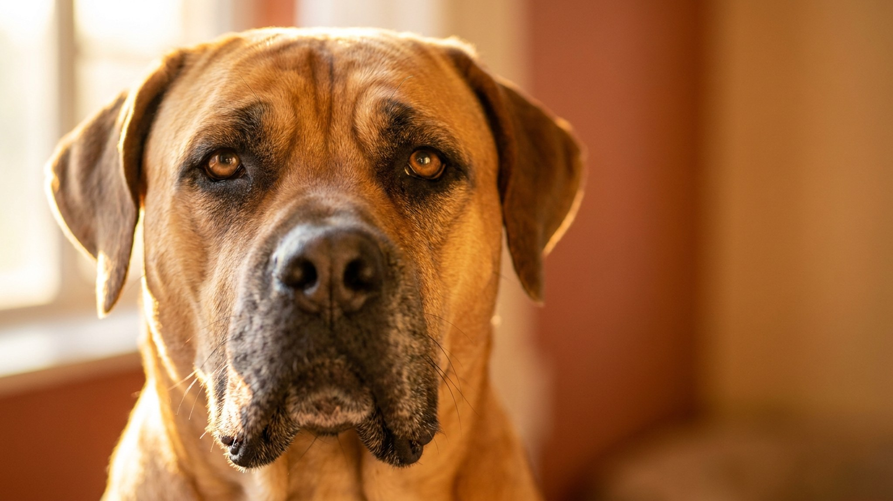

Бурбуль не просит любви, он охраняет. Южноафриканские фермеры веками отбирали его против леопардов и бабуинов, и этот отбор никуда не делся. Собака весит 60-90 кг, контролирует территорию инстинктивно и мгновенно читает, кто здесь свой. С опытным хозяином: преданный и управляемый компаньон. В чужих руках - серьёзная ответственность. Ниже всё, что нужно знать перед тем, как брать щенка.
🐾 У вас бурбуль?
AnimaLife соберёт уход под породу: к каким болезням есть склонность, что проверять по возрасту, чем кормить и когда пора к врачу. Бесплатно, прямо в мессенджере.
Собрать план ухода → Собрать в MAX →
У вас iPhone? AnimaLife есть в App Store
Бурбуль выглядит флегматично. На деле он всё время оценивает. Порода выведена в Южной Африке для охраны ферм: работала без команды, принимала решения самостоятельно, была готова к отпору в любой момент.
С семьёй бурбуль мягкий, терпеливый с детьми, лояльный к домашним животным, с которыми вырос. Чужих запоминает и делит на «допустимых» и нет. Незнакомый человек на территории получает не лай, а плотный взгляд и прямолинейное сопровождение. Агрессия без причины породе несвойственна, но при реальной угрозе реакция мгновенная и решительная.
Это не собака для первого владельца. Бурбуль быстро разберётся, кто в доме лидирует, и займёт позицию соответственно. Без чёткой иерархии, ранней социализации и систематической работы порода управляет хозяином, а не наоборот.
Бурбуль - деревенская собака. В идеале: дом, двор, забор от 2 метров. Квартира возможна, если обеспечить минимум 2 часа выгула в день и физическую нагрузку. В тесноте без работы порода начинает «изобретать занятия» сама: мебель, стены, обувь.
Социализацию начинают сразу, как щенок попал в дом. Людные места, транспорт, незнакомые запахи, дети, другие собаки - всё это нужно в щенячьем возрасте, пока окно открыто. Бурбуль, выращенный в изоляции, вырастет тревожным и реактивным.
Дрессировка строится на последовательности и чёткости. Порода хорошо поддаётся обучению, но только если понимает смысл команды и видит выгоду в подчинении. Насилие и жёсткое давление дают обратный эффект: бурбуль или замкнётся, или начнёт отвечать.
Курс OKD (общий курс дрессировки) или работа с кинологом, специализирующимся на молоссах: обязательная инвестиция для любого владельца этой породы.
Подходит: опытным владельцам крупных пород, людям с частным домом и двором, семьям с детьми школьного возраста, тем, кто готов вложить время в дрессировку и социализацию.
Не подходит: первичным владельцам без опыта с доминантными породами, людям с маленькими детьми-незнакомцами в доме (регулярные гости-малыши требуют особого контроля), тем, кто работает весь день и не может обеспечить нагрузку, жильцам небольших городских квартир без выезда за город.
Бурбуль в России набирает популярность, и это привлекает людей, которые разводят ради денег, не ради породы. Несколько ориентиров:
Материал носит информационный характер и не заменяет очную консультацию ветеринара.
🐾 Ваш питомец — бурбуль?
Заведите профиль в AnimaLife: приложение запомнит породу, возраст и вес и будет подсказывать по уходу именно для неё. Вопросы AI-ветеринару — круглосуточно и бесплатно.
Завести профиль → Завести в MAX →
У вас iPhone? AnimaLife есть в App Store
🐾 Понравился разбор?
Подпишитесь на канал — каждый день разбираем по одному тревожному симптому у кошек и собак: что в пределах нормы, а когда пора к врачу. Подпишитесь, чтобы не пропустить разбор, который может спасти здоровье вашего питомца.